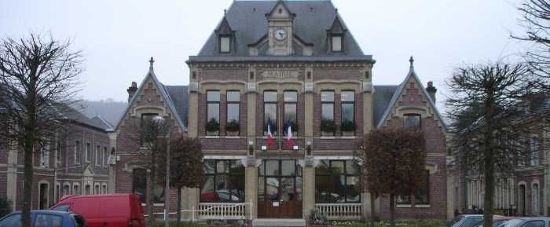

Histoire de la ville
Présentation de l'historique de la ville :
Commune de la vallée du Cailly, Le Houlme a suivi l'évolution industrielle. De la fin du Moyen-âge à nos jours, deux grandes activités ont dominé. Elles s'étalent, dans le temps, en deux grandes périodes Du Moyen Age au début du XIXe siècle : l'ère des moulins (surtout à papier) ; Du début du XIXe siècle aux années 1960 : les usines textiles «l'épopée du coton ».
Ces activités ont vu leur essor grâce à l'existence du cours d'eau « Le Cailly ». La recherche de l'énergie hydraulique comme force motrice imposa aux moulins une localisation géographique très précise. Un débit suffisant, une pente importante et un courant rapide déterminent l'installation de chutes d'eau.
Dès le début du XVIe siècle, des moulins, principalement à papier, sont édifiés dans la vallée. Six sont dénombrés dans la paroisse Saint-Martin-Du-Home en 1664 ; ils sont huit en 1789. Ils produisaient surtout des papiers marbrés employés pour la reliure des livres. Une forte partie était destinée à l'Angleterre.
En 1805 les moulins à papier sont au nombre de cinq et de quatre en 1811. Si en ce début de XIXe siècle, des moulins à blé ou à papier subsistent, ce sont les filatures de coton qui vont progressivement prendre possession des sites hydrauliques. Il est à remarquer que de nombreux enfants, dès l'âge de huit ans, sont employés dans les filatures, à l'épluchage et au dévidage.
Sous l'Empire, de riches négociants entreprennent l'édification de filatures. Ils achètent de nombreuses terres au HOULME en 1804.
En 1805, au HOULME, on dénombre une fabrique d'indiennes (toiles peintes), deux moulins à blé, cinq moulins à papier, trois filatures de coton. Sous l'Empire et la Restauration les filatures s'édifient.
En août 1825 les ouvriers fileurs se révoltent et LE HOULME est le théâtre d'événements violents.
C'est l'époque où la Vallée du Cailly est surnommée « petite vallée de Manchester ».
Le machinisme s'accompagne d'une misère effroyable dans les nouveaux centres industriels où rien n'avait été prévu pour pallier l'arrivée massive d'ouvriers.
D'autre part, u patronat inconscient de ses devoirs et des réalités tenait à sa merci des masses dépourvues de défense et en profitait.
Alertée, l'Académie des Sciences Morales et Politiques chargea un de ses membres, le docteur VILLERME, de faire une enquête, publiée en 1840 sous le titre : « Tableau de l'état physique et morale des ouvriers dans les fabriques de coton, de laine et de soie ».
Ce rapport donne les salaires des ouvriers, ouvrières et enfants d'une filature de coton du Houlme dans laquelle la durée de la journée de travail était de 15 heures.
Elle emploie 942 personnes (dont 178 enfants de 8 à 16 ans ).
Vie Pratique
Médecine Générale - Docteur Patrick CLOSET -16, rue Victor HUGO - 02 35 74 80 70
Docteur Alain TALBOT - Docteur LONGUET, 3 impasse du Chemin de Fer - Tél. 02 35 75 76 26
Les pharmacies - Pharmacie BOCHET - 21, rue de la République - 02 35 75 87 40 - 02 35 76 24 27
Pharmacie de la Mairie - 104, rue du Général de Gaulle - 02 35 74 45 14
Kinésithérapeute - Guy Paul REQUENA - 25, rue de la République - 02 35 75 40 25
Soins infirmiers - Dorothée CHERE - Domaine de la source - 02 35 81 81 22
Les associations
Associations Sportives :
Amicale Houlmoise Bondevillaise Football - Robert Anthony - E mail: fcbh1@orange.fr
Arts Martiaux (ALH) - Kung-fu / Full-Contact / Taï Chi Chuan - Tél. 02 35 76 15 97
Handball Malaunay / Le Houlme - Dominique NEEL - Tél. 02 35 75 21 80
Judo Club - Sylvie HENRY - Tél. 02 35 76 39 36 - contact@msajudo-jcb.com
Associations CulturellesAssociation des Peintres - Madame DUBOC - Tél. 02 35 76 34 09 - mail: duboc.nicole@bbox.fr
Musique : Président: Adrien BOULAY - Directeur: M. Pascal PIEDEFER - Renseignements: en mairie - Enseignement: du Piano, Trompette, Flute, Guitare, Accordéon, Batterie, saxophone.
Point lecture (bâtiment des diesels) - Ouvert le: mercredi de 14h30 à 16h30 et le 1er Vendredi du mois de 18h à 19h
Autres AssociationsAssociation Familiale du Houlme - Isabelle LEGAY - Tél. 0683954709
Les jardins du bord de l’eau - Rue de la Rougemare prolongée Le Houlme. Attribution en mairie
Les chats du Houlme - Mme Hucher - Tél. 06 82 86 74 91
Association des assistantes maternelles - Evelyne GONDRE - Tél. 02 35 76 80 97 - evelyneg76@free.fr